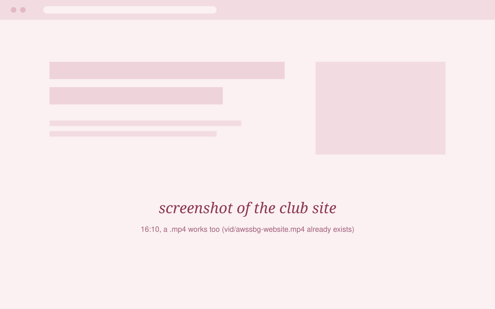

the people part.
most of what i know, someone in a room showed me first. this page is the stuff i do to return the favor.
AWS Student Builder Group, Adamson
president, since 2025
a 120+ member cloud community at Adamson. we used to be AWS Cloud Club AdU. when we rebranded, i went through the constitution and by-laws, flagged what needed fixing, and rebuilt how people actually get in.
i ran on four ideas: zero-barrier onboarding, build-first workshops, a career launchpad, and community-always. the first one is the easiest to show. joining is one form and ₱100, open to every year and every course, approved automatically. no interview.
the workshops are on real AWS services. you leave having deployed something, not having watched slides about it.

AWS Student User Groups Philippines
executive secretary, october 2025 to june 2026
the national network that campus AWS groups belong to, 40+ chapters across the country. the job was the unglamorous side of running a student org at that size: meetings, minutes, and keeping chapters in the same loop.
n8n, live, in front of strangers
a public webinar at Eskwelabs
co-presented with Cine. she took harness engineering and ui/ux, i took n8n and automation, and demoed the workflows live. if a node failed, everyone would have seen it.
the workflows are on the projects page.
smaller things
- 2026 hack and yap pitched Meowtervention with my team: an app blocker that spams you with cats.
- 2026 tutorials dojo wrote a published technical article on Amazon Bedrock.
if you run a student org and want to compare notes, or need someone to talk about cloud or automation at your thing, email is easiest.
darlanovasumanting06@gmail.com